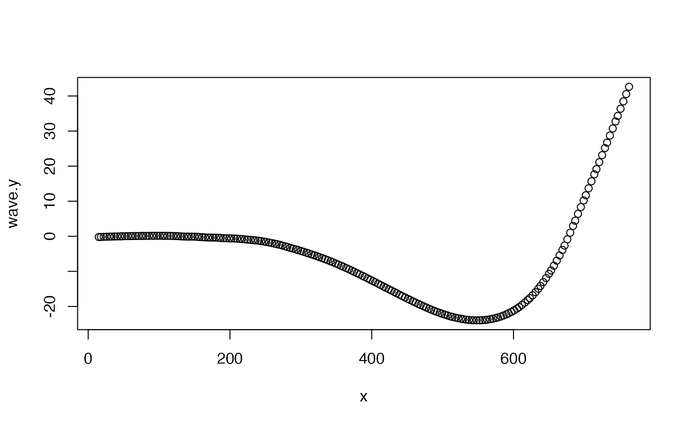
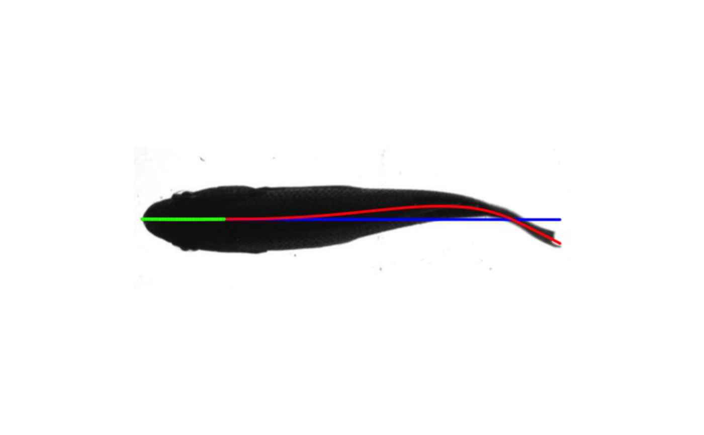

kin.simple.RdAutomatically retrieves the midline of a detected ROI based on size. Assumes the ROI of interest is the largest detected and not intersecting the edges of the image frame, conditions often met in kinematic studies. For each ROI of interest, finds the y-value midpoint along the x-value array of the ROI and fits a midline according to a chosen smoothing method (loess or spline). Also outputs the midline amplitude relative to a reference line determined by an anterior section of the ROI and outputs contours ROIs in each frame for subsequent analysis. Supported image formats are jpeg, png, and tiff.
kin.simple( image.dir = NULL, frames = NULL, thr = 0.7, size.min = 0.05, ant.per = 0.2, tips = 0.02, smoothing = "loess", smooth = 0.25, smooth.points = 200, save = TRUE, out.dir = NULL, plot.pml = TRUE, image.type = "orig", flip = TRUE, show.prog = FALSE )
| image.dir | character, directory containing images to analyze. |
|---|---|
| frames | numeric, vector indicating which images to process. |
| thr | numeric or character ('otsu') threshold to determine binary image. See Details. |
| size.min | numeric, indicating the minimum size of ROIs as a proportion of the pixel field to be considered in analysis. May be useful if smaller unimportant ROIs appear in the frame. Default is 0.05. |
| ant.per | numeric; left-most proportion of ROI that establishes the horizontal reference for the midline displacement. |
| tips, | numeric, the proportion the the midline data to use in calculation of the head and tail position. |
| smoothing | character, the midline smoothing method, either 'loess' or 'spline'. |
| smooth | numeric; if |
| smooth.points | numeric, number of equally spaced points along the ROI midline on which the smoothed midline is computed. |
| save | logical, value indicating if images should be outputted with midline and predicted midline based on the |
| out.dir | character, the directory to which outputted images should be saved. |
| plot.pml | logical, value indicating if outputted images should include the predicted midline (in blue) and the points according to |
| image.type | character; the type of image to be outputted, either 'orig' or 'bin' representing the original or binary images, respectively. Ignored if 'save=FALSE'. |
| flip | logical, indicating if binary image should be flipped. |
| show.prog | logical, indicating if outputted image should be displayed during analysis. |
A list with the following components:
kin.dat a data table consisting of frame-by-frame position parameters for the ROI determined by LDA analysis.
the frame number
'x' and 'y': the position of the tail (rightmost or posteriormost)
'head.x' and 'head.y': the x and y position of the head (leftmost or anteriormost)
'amp': the amplitude (amp) of the tail relative to the theoretical midline determined by the lm() predictions from ant.per
'roi': a character indicating the ROI ranked by size ('a' being the largest)
'head.pval': p values of the lm() fit that describes the position of the head as determined by ant.per (green points in the outputted images/video)
midline A data table containing, for each frame described by frames, the following:
'x' and 'y.m': x and y positions of the midline of the ROI #'
'y.min' and 'y.max': min and max y positions ROI's contour used in y.m calculation
'mid.pred': the predicted linear midline based on the points/pixels defined by ant.per (green points in the outputted images/video if 'plot.pml=TRUE')
'y.pred': midline points fit to a smooth spline or loess model with spar or span equal to smooth (red curve in the outputted images/video)
'wave.y': midline points 'y.pred' relative to 'mid.pred'
'roi': a character indicating ROI size ('a' being the largest)
cont A data table containing x and y positions of the contours used to calculate the data in 'kin.dat'. Contains the following:
'frame': the frame
'x' and 'y': the x and y positions of the contours
all.classes A data table containing the following for all ROIs detected:
'frame': the frame
'roi': the name of each ROI found in a frame.
'size': the size of each ROI
dim the x and y dimensions of the images analyzed
The algorithm assumes a left-right orientation, i.e., the head of the ROI is positioned left, the tail right. ffmpeg operations or even imageJ can rotate images not in this orientation. The ant.per value therefore establishes the reference line (theoretical straight midline) based on that portion of the head. The midline is calculated as the midpoints between the y extrema for each x position.
If 'save=TRUE', images are saved as binary or the original with a body midline overlay and, if chosen, with the theoretical midline (based on ant.per).
Thresholding operations can be performed with an arbitrary (user defined) numeric value or with Otsu's method ('thr="otsu"'). The latter chooses a threshold value by minimizing the combined intra-class variance. See otsu.
kin.simple,Simplified midline tracking over image sequences,Simplified midline tracking over image sequences — kin.simple,kin.simple.Rd,character(0),kin.simple,character(0),list(title = "Description", contents = "Automatically retrieves the midline of a detected ROI based on size. Assumes the ROI of interest is the largest detected and not intersecting the edges of the image frame, conditions often met in kinematic studies. For each ROI of interest, finds the y-value midpoint along the x-value array of the ROI and fits a midline according to a chosen smoothing method (loess or spline). Also outputs the midline amplitude relative to a reference line determined by an anterior section of the ROI and outputs contours ROIs in each frame for subsequent analysis. Supported image formats are jpeg, png, and tiff.
"),list(description = "Automatically retrieves the midline of a detected ROI based on size. Assumes the ROI of interest is the largest detected and not intersecting the edges of the image frame, conditions often met in kinematic studies. For each ROI of interest, finds the y-value midpoint along the x-value array of the ROI and fits a midline according to a chosen smoothing method (loess or spline). Also outputs the midline amplitude relative to a reference line determined by an anterior section of the ROI and outputs contours ROIs in each frame for subsequent analysis. Supported image formats are jpeg, png, and tiff."),kin.simple( image.dir = NULL, frames = NULL, thr = 0.7, size.min = 0.05, ant.per = 0.2, tips = 0.02, smoothing = "loess", smooth = 0.25, smooth.points = 200, save = TRUE, out.dir = NULL, plot.pml = TRUE, image.type = "orig", flip = TRUE, show.prog = FALSE ),list(list(name = "image.dir", description = "character, directory containing images to analyze.
"), list(name = "frames", description = "numeric, vector indicating which images to process.
"), list(name = "thr", description = "numeric or character ('otsu') threshold to determine binary image. See Details.
"), list(name = "size.min", description = "numeric, indicating the minimum size of ROIs as a proportion of the pixel field to be considered in analysis. May be useful if smaller unimportant ROIs appear in the frame. Default is 0.05.
"), list(name = "ant.per", description = "numeric; left-most proportion of ROI that establishes the horizontal reference for the midline displacement.
"), list(name = "tips, ", description = "numeric, the proportion the the midline data to use in calculation of the head and tail position.
"), list(name = "smoothing", description = "character, the midline smoothing method, either 'loess' or 'spline'.
"), list(name = "smooth", description = "numeric; if
"), list(name = "smooth.points", description = "smoothingis set to 'loess', passed to 'span' parameter ofloess. Ifsmoothingis set to 'spline', passed to 'spar' parameter ofsmooth.splinenumeric, number of equally spaced points along the ROI midline on which the smoothed midline is computed.
"), list(name = "save", description = "logical, value indicating if images should be outputted with midline and predicted midline based on the
"), list(name = "out.dir", description = "lm()predictions fromant.peroverlaying original or binary images.character, the directory to which outputted images should be saved.
"), list(name = "plot.pml", description = "logical, value indicating if outputted images should include the predicted midline (in blue) and the points according to
"), list(name = "image.type", description = "ant.perused to construct the predicted midline (in green).character; the type of image to be outputted, either 'orig' or 'bin' representing the original or binary images, respectively. Ignored if 'save=FALSE'.
"), list(name = "flip", description = "logical, indicating if binary image should be flipped.
"), list(name = "show.prog", description = "logical, indicating if outputted image should be displayed during analysis.
")),TRUE,#### plot caudal amplitude and produce a classic midline waveform plot of swimming fish ##A very long example. if (FALSE) { #download example images and place in 'example' subdirectory f <- "https://github.com/ckenaley/exampledata/blob/master/example.zip?raw=true" download.file(f, paste0(tempdir(),"/temp.zip")) unzip(paste0(tempdir(),"/temp.zip"), exdir=tempdir()) unlink(paste0(tempdir(),"/temp.zip")) dir.create(paste0(tempdir(),"/processed_images")) kin <- kin.simple(image.dir =paste0(tempdir(),"/example"), smoothing = "loess",frames=1:50, out.dir=paste0(tempdir(),"/processed_images"), show.prog = FALSE,thr = "otsu", image.type="bin",smooth=0.4) #plot instantaneous amplitude of tail (last/rightmost point) over frames p <- ggplot(dat=kin$kin.dat,aes(x=frame,y=amp))+geom_line()+geom_point()+theme_classic(15) print(p) # midline plot ml <- kin$midline #leftmost x starts at 0 ml <- ml[,x2:=x-x[1],by=frame] ml <- merge(ml,kin$kin.dat[,list(frame,amp)],by="frame") #merge these pal <- wes_palette("Zissou1", 100, type = "continuous") #"Zissou" color palette p <- ggplot(dat=ml,aes(x=x2,y=wave.y))+theme_classic(15)+scale_color_gradientn(colours = pal) p <- p+geom_line(aes(group=frame,color=amp),stat="smooth",method = "loess", size = 1.5) print(p) #Make a video of processed frames images.to.video2(image.dir=paste0(tempdir(),"/processed_images"), vid.name="trout_test",out.dir=tempdir(),frame.rate=5,qual=100,raw=FALSE) file.exists(paste0(tempdir(),"/trout_test_red.mp4")) } ## A very short example. #retrieve image i <- EBImage::readImage(system.file("extdata/img", "sunfish_BCF.jpg", package = "trackter")) #create directory and write image to it t <-tempdir() dir.create(paste0(t,"/images")) EBImage::writeImage(i,paste0(t,"/images/sunfish001.jpg"),type = "jpeg") #run kin.search and save output image to directory kin.i<- kin.simple(image.dir = paste0(t,"/images"),save = TRUE,out.dir = t) #plot midline with(kin.i$midline,plot(x,wave.y)),list(list(title = "Value", contents = "A list with the following components:
\n
kin.data data table consisting of frame-by-frame position parameters for the ROI determined by LDA analysis.
the frame number
'x' and 'y': the position of the tail (rightmost or posteriormost)
'head.x' and 'head.y': the x and y position of the head (leftmost or anteriormost)
'amp': the amplitude (amp) of the tail relative to the theoretical midline determined by the lm() predictions from ant.per
'roi': a character indicating the ROI ranked by size ('a' being the largest)
'head.pval': p values of the lm() fit that describes the position of the head as determined by ant.per (green points in the outputted images/video)
midline A data table containing, for each frame described by frames, the following:
'x' and 'y.m': x and y positions of the midline of the ROI\n#'
'y.min' and 'y.max': min and max y positions ROI's contour used in y.m calculation
'mid.pred': the predicted linear midline based on the points/pixels defined by ant.per (green points in the outputted images/video if 'plot.pml=TRUE')
'y.pred': midline points fit to a smooth spline or loess model with spar or span equal to smooth (red curve in the outputted images/video)
'wave.y': midline points 'y.pred' relative to 'mid.pred'
'roi': a character indicating ROI size ('a' being the largest)
cont A data table containing x and y positions of the contours used to calculate the data in 'kin.dat'. Contains the following:
'frame': the frame
'x' and 'y': the x and y positions of the contours
all.classes A data table containing the following for all ROIs detected:
'frame': the frame
'roi': the name of each ROI found in a frame.
'size': the size of each ROI
dim the x and y dimensions of the images analyzed
The algorithm assumes a left-right orientation, i.e., the head of the ROI is positioned left, the tail right. ffmpeg operations or even imageJ can rotate images not in this orientation. The ant.per value therefore establishes the reference line (theoretical straight midline) based on that portion of the head. The midline is calculated as the midpoints between the y extrema for each x position.
If 'save=TRUE', images are saved as binary or the original with a body midline overlay and, if chosen, with the theoretical midline (based on ant.per).
Thresholding operations can be performed with an arbitrary (user defined) numeric value or with Otsu's method ('thr=\"otsu\"'). The latter chooses a threshold value by minimizing the combined intra-class variance. See otsu.